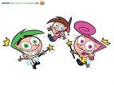

BurningSeries - Simpsons und weitere Serien kostenlos online sehen
Cosmo und Wanda ? Wenn Elfen helfen
Staffel 4

Danke an
Starscream
Staffeln:
1
2
3
4
5
6
7
8
Zufall
Episoden:
1
Der 500-Seiten Aufsatz
Shelf Life
Videos:
2
Der Zauberkopierer / Diebische Eltern?
Hard Copy / Parent Hoods
Videos:
3
Der Kinohit des Jahres / Liebes Tagebuch...
Lights...Camera...Adam! / A Bad Case of Diary-Uh!
Videos:
4
Gefangen in der Welt der Feen, Teil 1
The Jimmy Timmy Power Hour, Part 1
Videos:
5
Gefangen in der Welt der Feen, Teil 2
The Jimmy Timmy Power Hour, Part 2
Videos:
6
Baby für einen Tag / Falsch oder Richtig?
Baby Face / Mr. Right!
Videos:
7
Vicky ist nicht mehr zickig / Kobold, übernehmen sie
Vicky Loses Her Icky / Pixies Inc.
Videos:
8
Vicky ist verliebt / Selten so gelacht
The Odd Couple / Class Clown
Videos:
9
Der große Super-Helden Wunsch
The Big Superhero Wish
Videos:
10
Falsche Freunde / Aber bitte mit Gefühl
Power Pals / Emotion Commotion
Videos:
11
Zauberhafte Nachbarn / Nur du und ich
Fairly Friends & New Neighbors! / Just the Two of Us!
Videos:
12
Mama ist die Beste / Rund um die Uhr
Who's Your Daddy? / HomeWrecker
Videos:
13
Ein Bräutigam auf der Flucht / Gute Wünsche - Schlechte Wünsche
A New Squid in Town! / Wish Fixers
Videos:
14
Sag die Wahrheit, Cosmo! / Das Seetang-Monster
Truth or Cosmoquenes / Beach Bummed!
Videos:
15
Altagshelden, Teil 1
Channel Chasers, Part 1
Videos:
16
Altagshelden, Teil 2
Channel Chasers, Part 2
Videos:
17
Altagshelden, Teil 3
Channel Chasers, Part 3
Videos:
18
Die Verbrechensbekämpfer / Der Geist aus der Lampe
Catman Meets the Crimson Chin / Genie Meanie Minie Mo
Videos:
19
Kinder an die Macht, Teil 1
School's Out: The Musical!, Part 1
Videos:
20
Kinder an die Macht, Teil 2
School's Out: The Musical!, Part 2
Videos:
21
Negativ Timmy / Kleiner Mann - Große Liebe
Nega-Timmy / Love at First Height
Videos:
Der Zauberkopierer / Diebische Eltern?
Hard Copy / Parent Hoods
Noch keine Beschreibung verfügbar.
Bewertung:
0 von 5 (0 Stimmen)
Hoster dieser Episode
(insgesamt 694 Views)